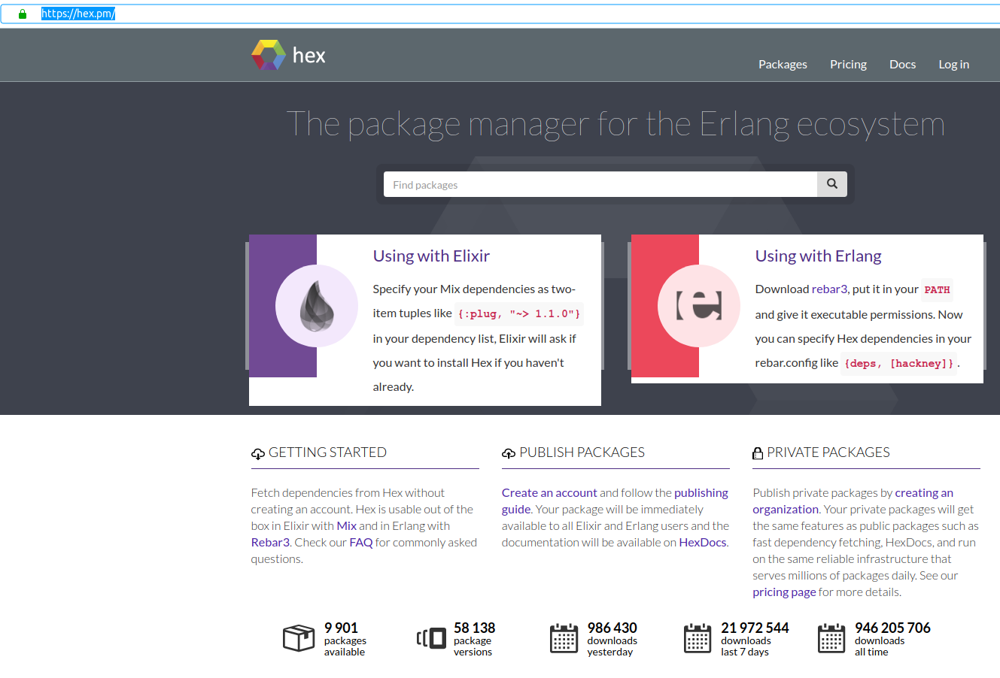

<div style="display: flex; flex-direction: column; padding-bottom: 2rem; align-items: center;">
    <h2>Hex</h2>
    <pre class="fragment"><code class="">Hex v0.20.1
        Hex is a package manager for the Erlang ecosystem.</code></pre>

    <div class="fragment" style="width:90%; display: flex; align-items: center; justify-content: center">
        

    </div>
</div>

<aside class="notes">
    <ul>
        <li>Unterstützt auch private Repos</li>
        <li>Standardformat für Online-Doku: ExDoc</li>
    </ul>
</aside>